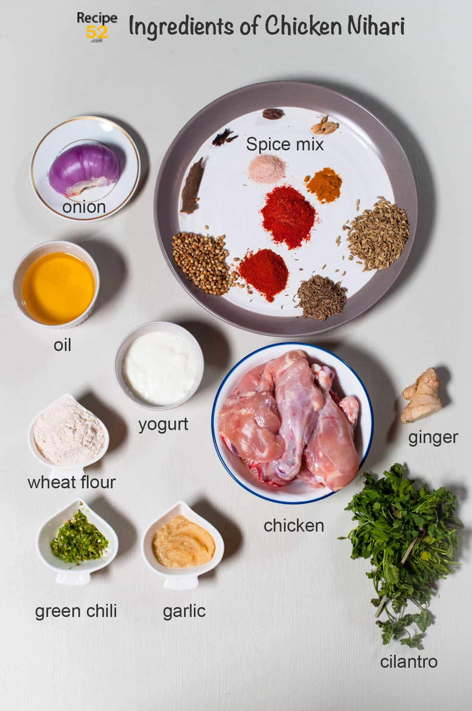
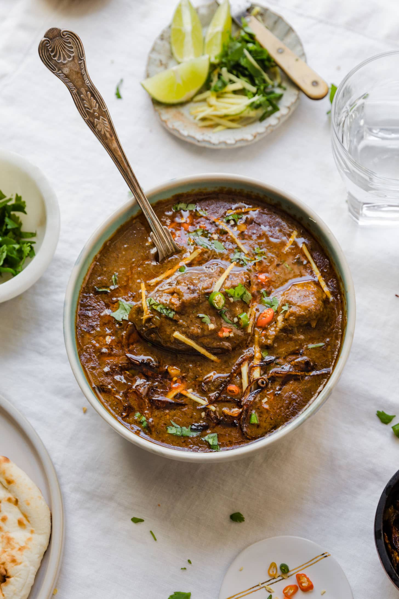
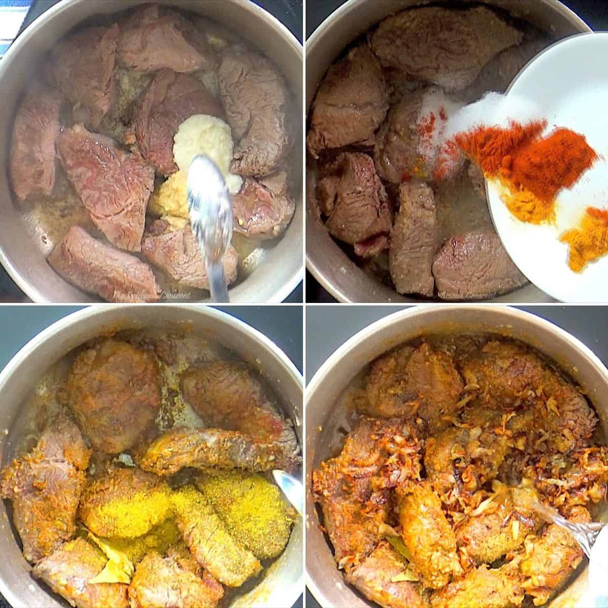

Ingredients:
- 1 kg beef or mutton, cut into pieces
- 2 onions, thinly sliced
- 4 tablespoons Nihari masala
- 2 tablespoons ginger-garlic paste
- 1/2 cup wheat flour (for thickening)
- 1/4 cup oil or ghee
- Salt to taste
- Chopped coriander leaves for garnish
- Lemon wedges for serving
Instructions:
- In a large pot, heat oil or ghee over medium heat.
- Add thinly sliced onions and cook until they turn golden brown.
- Add ginger-garlic paste and sauté until the raw smell disappears.
- Add beef or mutton pieces and cook until they are browned on all sides.
- Add Nihari masala and salt. Stir well to coat the meat with the spices.
- Add enough water to cover the meat and bring it to a boil.
- Once boiling, reduce the heat to low, cover the pot, and let it simmer for 2-3 hours, or until the
meat
is tender.
- In a small bowl, mix wheat flour with some water to make a smooth paste.
- Add this paste to the pot and stir well to thicken the gravy.
- Simmer for another 30 minutes until the gravy reaches your desired consistency.
- Garnish with chopped coriander leaves and serve hot with naan or rice, accompanied by lemon wedges.
Back to Home